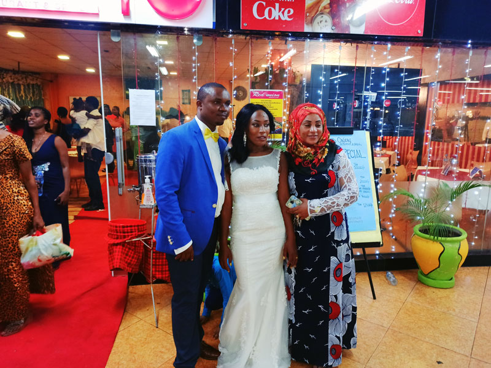

Ndoa: Je, ndoa ni Sakramenti, Agano, au Mkataba?.
Sakramenti:
Katika muktadha wa kidini, sakramenti ni ibada takatifu au sherehe ambayo inachukuliwa kuwa ishara ya nje ya neema ya kiroho ndani ya mtu. Sakramenti mara nyingi hufungamana na mila za kidini maalum, kama vile Ukristo. Inachukuliwa kuwa ni vitendo muhimu vya ibada na inasadikiwa kuleta baraka za kimungu au faida za kiroho kwa washiriki. Mifano ya sakramenti katika Ukristo ni ubatizo, Ekaristi (inayojulikana pia kama Sakramenti ya Ekaristi au Karamu ya Bwana), na kipaimara.
Mkataba:
Mkataba ni makubaliano ya kisheria yanayoweka haki na majukumu ya pande mbili au zaidi. Ni makubaliano ya hiari ambapo pande zinazohusika hukubaliana na masharti na hali fulani. Mikataba mara nyingi hutumiwa katika muktadha mbalimbali, kama vile shughuli za biashara, makubaliano ya ajira, na mikataba ya kukodisha au kupanga. Mkataba unatumika kuhakikisha kuwa pande zinazohusika wanaelewa na kutekeleza majukumu yao, na pia hutoa mfumo wa kisheria wa kutatua mizozo ikitokea.
Agano:
Agano ni makubaliano ya solomu na yenye uhusiano wa karibu kati ya pande mbili au zaidi, kawaida ikijumuisha ahadi, ahadi, au majukumu ya pande hizo. Tofauti na mkataba, agano mara nyingi lina maana kubwa ya kimaadili, kiroho, au kidini. Linajumuisha hisia za uaminifu, imani, na uaminifu katika kudumisha makubaliano hayo. Agano linaweza kuwepo katika muktadha mbalimbali, ikiwa ni pamoja na mahusiano ya kibinafsi, imani za kidini, na mikataba ya kisheria. Katika muktadha wa kidini, agano linaweza kurejelea uhusiano kati ya Mungu na watu binafsi au jamii, ambapo Mungu hufanya ahadi na kutarajia tabia au matendo fulani kwa kubadilishana.
Kwa ufupi, sakramenti ni ibada takatifu au sherehe inayobeba neema ya kiroho, mkataba ni makubaliano ya kisheria kati ya pande zinazohusika, na agano ni makubaliano solomu mara nyingi yanayohusishwa na umuhimu wa kimaadili, kiroho, au kidini.

Ndoa kama Sakramenti:
Katika Ukristo wa Kikatoliki na Waorthodoksi wa Mashariki, ndoa mara nyingi huchukuliwa kuwa moja ya sakramenti saba. Desturi hizi zinasisitiza kuwa kupitia sakramenti ya ndoa, neema ya Mungu hutolewa kwa wanandoa. Sherehe ya ndoa inachukuliwa kuwa ibada takatifu inayosimbolisha umoja wa Kristo na Kanisa. Upendo wa wanandoa kwa kila mmoja unaeleweka kama kielelezo cha upendo wa Kristo kwa wafuasi wake. Asili takatifu ya ndoa inaaminiwa kutoa baraka za kimungu, kuimarisha uhusiano wa wanandoa, na kutakasa umoja wao. Kwa mtazamo huu, ndoa inachukuliwa kuwa ishara inayoonekana ya neema na uwepo wa Mungu. Wanandoa wanashiriki katika mpango mtakatifu wa uumbaji na wanaitwa kuishi wito wao kwa njia ya upendo na kujitoa. Uhusiano wa ndoa unachukuliwa kama njia ya kusaidiana, kukua kiroho, na kujenga familia ya Kikristo. Uelewa wa sakramenti ya ndoa unasisitiza asili yake ya kuwa ya maisha yote na isiyoweza kuvunjika, ikilingana na imani kwamba neema ya Mungu inadumisha uhusiano wa ndoa.
Ndoa kama Agano:
Wazo la ndoa kama agano limetokana na mafungu ya Biblia yanayoelezea uhusiano wa ndoa kwa kutumia lugha ya agano. Kwa mfano, katika kitabu cha Mwanzo, Mungu anathibitisha agano na Adamu na Hawa kama ndoa ya kwanza. Agano la ndoa linaonekana kama makubaliano takatifu na yanayowabana mbele ya Mungu, yaliyojaa upendo, uaminifu, na ahadi ya kudumu. Kutoka mtazamo huu, ndoa inachukuliwa kuwa zaidi ya mkataba wa kisheria au kijamii; ni uhusiano takatifu unaohusisha vipengele vya kiroho na maadili. Ahadi na kujitolea kwa pande zote mbili za ndoa. Mtazamo wa agano unasisitiza upendo wa sadaka, unyenyekevu, na uaminifu ambao unapaswa kuwa sehemu ya uhusiano wa ndoa. Unalenga umuhimu wa kutunza uhusiano huo na kufanya kazi pamoja ili kutimiza ahadi zilizofanywa ndani ya agano. Ingawa tafsiri sahihi ya agano la ndoa inaweza kutofautiana, mtazamo huu mara nyingi unasisitiza ahadi ya maisha yote ya wanandoa, msaada na upendo wanavyotoa kwa kila mmoja, na safari yao ya pamoja kuelekea kukua kiroho na utakatifu wa pamoja.
Ndoa kama Mkataba:
Baadhi ya mafundisho ya Kikristo yanachukulia ndoa kimsingi kama mkataba wa kisheria na kijamii. Ingawa inatambua umuhimu wa upendo na ahadi, mtazamo huu unazingatia haki, majukumu, na wajibu wa wanandoa ndani ya uhusiano wa ndoa. Ndoa kama mkataba inaweka msisitizo mkubwa katika vipengele vya vitendo vya umoja huo, kama vile haki za mali, mipangilio ya kifedha, na majukumu ya pande zote mbili za ndoa. Inakiri kuwa ndoa inahusisha makubaliano ya kisheria na kuundwa kwa haki na majukumu fulani kati ya washirika. Ingawa mtazamo wa mkataba wa ndoa huenda usiweke kando vipengele vya kiroho au hisia za uhusiano huo, mara nyingi unalenga zaidi katika vipengele vya kisheria na vitendo. Ustawi na msaada wa wanandoa, pamoja na kutimiza majukumu yao, ni mambo muhimu ndani ya mtazamo huu.
Ni muhimu kutambua kuwa mitazamo hii kuhusu ndoa haikinzani kabisa, na madhehebu mbalimbali ya Kikristo na watu binafsi wanaweza kuwa na mchanganyiko tofauti wa maoni haya. Uelewa maalum wa ndoa ndani ya Ukristo unaweza kutofautiana kulingana na mambo ya kitamaduni, mafundisho ya madhehebu, na imani za mtu binafsi. Ni muhimu kutambua kuwa tafsiri hizi tofauti za ndoa hazikinzani kabisa. Baadhi ya mitazamo ya Kikristo inaweza kutambua vipengele vingi, ikijumuisha sehemu za sakramenti, agano, na mkataba katika uelewa wao wa ndoa. Imani na mazoea maalum kuhusu ndoa yanaweza kutofautiana ndani na kati ya madhehebu ya Kikristo, yakiakisi tofauti za mitazamo ya teolojia na muktadha wa kitamaduni.
Ndoa ya Kanisa.
“Ndoa na iheshimiwe na watu wote.” Hivyo ndivyo ninavyochagua kuanza makala hii. Ingawa nitajiepusha na kuangazia ubaya wa mafundisho ya ndoa, nitaangalia jinsi makanisa ya leo yanavyodhibiti ndoa kuwa mali ya makutano badala ya kuwa mali ya wanandoa wenyewe. Ninasema hivi kwa kuzingatia mafundisho yanayosambaa na kuchukuliwa kuwa jambo la kawaida na utaratibu, ingawa athari yake ni mbaya sana. Kwa sababu ya hili, kumekuwa na fundisho linalowapa watu mwongozo kwamba, ikiwa Kanisa (makutano/jumuia/taasisi) halijaridhia, basi ndoa hiyo si halali na haina baraka mbele za Mungu. Jambo hili ndilo hasa lililonivuta kuandika makala hii juu ya ndoa. Katika makala hii, nitazingatia mambo matatu ambayo nitayaangazia kwa urefu:

Muumini kushawishiwa kwa kutumia jina la Yesu, kuingia katika ndoa na Muumini wa Imani moja naye:
Katika makanisa ya leo, kumekuwa na mazoea ya kuwashawishi waumini kuingia katika ndoa na watu ambao wanaamini imani moja na wao. Hii mara nyingi hufanyika kwa kutumia jina la Yesu na madai ya kuwa ndoa kama hiyo itakuwa na baraka za Mungu. Nitachunguza jinsi mazoea haya yanavyoathiri ndoa na jinsi yanavyopaswa kutathminiwa kwa busara.
Muumini mpya kutenganishwa na mwenzi wake baada ya kuamini Imani/Dhehebu/Dini nyingine:
Kuna hali ambapo muumini mmoja anaweza kuamua kujiunga na imani, dhehebu, au dini nyingine, na matokeo yake ni kutenganishwa na mwenzi wake ambaye bado anashikilia imani yao ya awali. Nitachunguza jinsi makanisa yanavyoshughulikia hali hii na jinsi wanavyoweza kusaidia kudumisha umoja na uelewano katika ndoa za waumini.
Ndoa inapata kibali kwa Mungu kwa kufungiwa kanisani pekee:
Kuna imani na mafundisho ambayo yanadai kuwa ndoa inaweza kupata kibali na baraka za Mungu tu ikiwa inafungwa kanisani na kupokea tamko la kidini. Nitachunguza jinsi mafundisho haya yanavyoathiri maoni ya watu kuhusu ndoa na jinsi yanavyoweza kuleta shinikizo na mizozo kwa wanandoa ambao hawajafuata utaratibu huu.
Katika kuchunguza mambo haya matatu, lengo langu litakuwa ni kutoa mtazamo wa kina na kuzingatia athari za mafundisho na utamaduni unaohusiana na ndoa katika makanisa ya leo.
Zingatia.
Ni kweli kuwa ili kuelewa vizuri maandiko na mafundisho ya Biblia kuhusu ndoa na imani, ni muhimu kuchunguza muktadha wa mistari husika na kuzingatia mafundisho ya jumla ya Biblia kuhusu ndoa na uhusiano wa Kikristo. Pia, ushauri wa viongozi wa kiroho na sala ni muhimu katika kufanya maamuzi sahihi kuhusu ndoa na imani. Ni vizuri kuzingatia mwongozo wa Roho Mtakatifu na kusali kwa ajili ya hekima na uelewa katika kila hatua ya maisha yetu.
Njia ya kuchunguza mafundisho ya Biblia kuhusu ndoa na imani inahitaji umakini na uangalifu katika kusoma na kuelewa muktadha wa kifungu husika, kuzingatia mafundisho mengine ya Biblia kuhusu ndoa, na kuomba mwongozo wa Mungu katika kila maamuzi tunayofanya. Kwa kuwa mafundisho na muktadha yanaweza kuwa na utata, ni vyema kushauriana na viongozi wa kiroho au wazee wa kanisa ambao wana maarifa na ufahamu zaidi katika suala hili.
Kwa njia hii, tunaweza kuwa na ufahamu sahihi na kufuata mafundisho ya Biblia kwa hekima na busara katika maisha yetu ya ndoa na imani. Ni muhimu pia kutambua kwamba hali za ndoa zinatofautiana, na kwa hiyo, ni vyema kuwa na mwongozo wa kiroho uliozingatia muktadha wa kibinafsi na mahitaji ya kila mtu katika maisha yao ya ndoa na imani.
Hitimisho
Ndoa ni suala lenye tofauti na mitazamo mingi, ikiwa ni pamoja na maoni ya kidini, sheria za kiraia, na tamaduni za kijamii. Katika muktadha wa makanisa ya leo, kuna changamoto katika jinsi wanavyoshughulikia ndoa na imani. Ni muhimu kuzingatia mafundisho ya Biblia na kuwa na mwongozo wa kiroho katika kufanya maamuzi sahihi kuhusu ndoa na imani. Ni vyema kusoma na kuelewa muktadha wa maandiko, kushauriana na viongozi wa kiroho, na kuomba mwongozo wa Mungu katika kila hatua ya maisha yetu.
Tunapaswa kuwa na heshima kwa tofauti za imani na kuheshimu uhuru wa mtu binafsi katika kufanya maamuzi yao ya ndoa. Upendo, uelewa, na ukarimu ni muhimu katika kuishi kwa amani na kuheshimiana katika jamii yenye tofauti za kikabila, kidini, na tamaduni. Ni matumaini yetu kwamba tukiwa na ufahamu wa kina wa mafundisho ya Biblia, kuwa wazi kwa mazungumzo na wengine, na kuomba mwongozo wa Mungu, tutaweza kujenga ndoa zenye msingi imara na kuishi kwa amani na utulivu katika maisha yetu ya ndoa na imani.